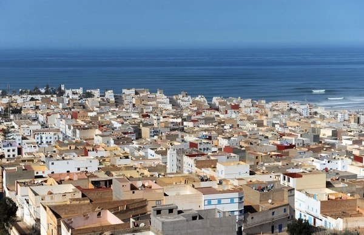

Proyecto Migracions'19
Barres i ones
Proyecto Migracions'19
Barres i ones
Biografia
Entrevista
Plato
Receta
Alumnos

Mohamed Kais - Tajin
Proviene de Marruecos de una ciudad llamada Sidi Ifni. Vino a España porque le trajeron a los 8 o 9 años, dice que le gustaba su vida en Marruecos por que la ciudad es menos estresante. Comenta que tuvo una infancia divertida y que se adapto rápido al idioma español. Cuando se hizo grande hizo un curso de cocinero y empezó a trabajar en restaurantes como practicante. Trabaja en un restaurante marroquí, le gusta su trabajo pero hay mucha competencia ya que a la gente le gusta probar cosas nuevas. De todos los platos que prepara el tajin es su favorito además de que le gusta mucho.